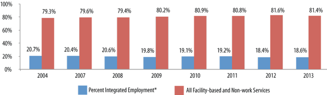

Since Fiscal Year 1988, the Institute for Community Inclusion has administered the National Survey of State Intellectual and Developmental Disability Agencies’ (IDD Agencies) Day and Employment Services. The work is funded by the Administration on Developmental Disabilities and is designed to describe the nature of day and employment services for individuals with intellectual and developmental disabilities.
In FY2013, an estimated 607,959 individuals received day or employment supports from state IDD program agencies. This number grew from 457,405 in FY1999. The estimated number of individuals in integrated employment services increased from 108,680 in FY1999 to 113,271 in FY2013. State investment continues to emphasize facility-based and non-work services, rather than integrated employment services. Figure 1 shows the trends in the percentage of people served in integrated employment and facility-based and non-work settings between FY2004 and FY2013.
Major findings include:
Figure 1. Estimated IDD Agency Service Distribution by Year

See data| 2004 | 2007 | 2008 | 2009 | 2010 | 2011 | 2012 | 2013 | |
| Percent Integrated Employment* | 20.7% | 20.4% | 20.6% | 19.8% | 19.1% | 19.2% | 18.4% | 18.6% |
| All Facility-based and Non-work Services | 79.3% | 79.6% | 79.4% | 80.2% | 80.9% | 80.8% | 81.6% | 81.4% |
*Percents displayed represent estimates for the number of people served in integrated employment nationally including all 50 states and Washington, DC
| State | Total Served | Percent Integrated Employment | Percent Community Based Non-work | Percent Facility Based Work | Percent Facility Based Non-work |
|---|---|---|---|---|---|
| AK | 1,608 | 26% | 0% | 0% | 98% |
| AL | 4,893 | 4% | 0% | 2% | 94% |
| AR | -1 | -1 | -1 | -1 | -1 |
| AZ | 7,471 | 21% | 0% | 12% | 67% |
| CA | 79,833 | 12% | 75% | 13% | 0% |
| CO | 7,706 | 27% | 74% | 0% | 54% |
| CT | 9,764 | 49% | 51% | 4% | 0% |
| DC | 1,253 | 12% | -1% | 0% | 87% |
| DE | 1,923 | 29% | 13% | 24% | 31% |
| FL | 16,653 | 14% | 0% | 0% | 0% |
| GA | 19,854 | 13% | 26% | 0% | 60% |
| HI | 2,180 | 2% | 90% | 1% | 56% |
| IA | 12,998 | 17% | 0% | 25% | 58% |
| ID | -1 | -1 | -1 | -1 | -1 |
| IL | 24,178 | 6% | 0% | 1% | 93% |
| IN | 13,049 | 15% | 71% | 34% | 43% |
| KS | 6,200 | 13% | 53% | 50% | 58% |
| KY | 7,072 | 18% | 96% | 0% | 13% |
| LA | 5,346 | 31% | 0% | 29% | 39% |
| MA | 15,523 | 29% | 17% | 20% | 55% |
| MD | 12,663 | 40% | 0% | 0% | 60% |
| ME | 3,515 | 28% | -1 | -1 | -1 |
| MI | 17,746 | 23% | 36% | 25% | 28% |
| MN | 22,306 | 13% | 25% | 53% | 8% |
| MO | 5,618 | 12% | 6% | 0% | 89% |
| MS | -1 | -1 | -1 | -1 | -1 |
| MT | 1,854 | 12% | 0% | 0% | 88% |
| NC | 13,625 | 22% | 28% | 19% | 33% |
| ND | -1 | -1 | -1 | -1 | -1 |
| NE | -1 | -1 | -1 | -1 | -1 |
| NH | 3,603 | 38% | 65% | 0% | 0% |
| NJ | 11,910 | 11% | 0% | 22% | 63% |
| NM | 3,332 | 33% | 75% | 0% | 50% |
| NV | 2,372 | 18% | 1% | 44% | 36% |
| NY | 56,873 | 13% | 0% | 14% | 82% |
| OH | 34,689 | 21% | 0% | 54% | 41% |
| OK | 4,050 | 62% | 28% | 55% | 0% |
| OR | 10,919 | 33% | 32% | 24% | 25% |
| PA | 28,133 | 18% | 44% | 33% | 33% |
| RI | 3,475 | 33% | 58% | 14% | 77% |
| SC | 7,425 | 29% | 11% | 38% | 42% |
| SD | 2,490 | 18% | 31% | 67% | 31% |
| TN | 7,026 | 19% | 92% | 0% | 53% |
| TX | 46,043 | 8% | 0% | 1% | 54% |
| UT | 3,131 | 23% | 81% | 0% | 0% |
| VA | 14,127 | 24% | 4% | 4% | 68% |
| VT | 2,905 | 38% | 63% | 0% | 0% |
| WA | 8,280 | 86% | 12% | 8% | >1% |
| WI | 15,367 | 21% | 13% | 44% | 50% |
| WV | 2,134 | 41% | 100% | 1% | 58% |
| WY | 1,428 | 18% | 0% | 9% | 72% |
Winsor, J. E. (2015). State intellectual disability and developmental disabilities agencies’ service trends. DataNote Series, Data Note 51. Boston, MA: University of Massachusetts Boston, Institute for Community Inclusion.
This is a publication of StateData.info, funded in part by the Administration on Developmental Disabilities, U.S. Department of Health and Human Services (#90DN0216).